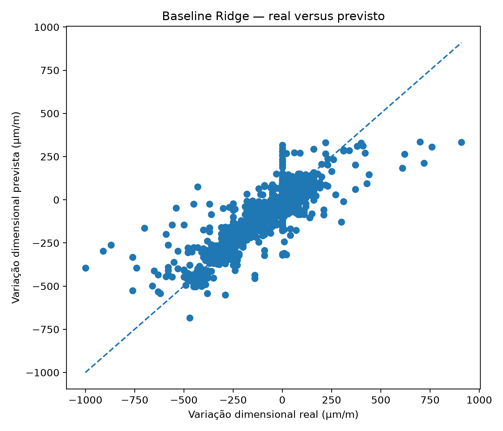

Baseline com Ridge Regression
Estabelecer uma referência linear regularizada para comparação com modelos de maior complexidade.
Resultado principal
MAE 63,161 µm/m; RMSE 96,159 µm/m; R² 0,740; acurácia do sinal 0,794.
Decisão metodológica
Usar esse desempenho como baseline para os experimentos seguintes.
Evidência tabular
| MAE | RMSE | R2 | acuracia_sinal |
|---|---|---|---|
| 63.16059650256423 | 96.15933292656446 | 0.7402420057495308 | 0.7940566689702834 |

Rastreabilidade
Este experimento sustenta diretamente a seção 4.3 dos resultados parciais da dissertação.
Relatório detalhado do experimento
Conteúdo incorporado diretamente do relatório Markdown original do Experimento 03, preservando procedimentos, tabelas, resultados, interpretação e conclusão.
1. Caracterização e finalidade
Este experimento estabelece um modelo de referência para a predição longitudinal da variação dimensional. A finalidade é obter um desempenho inicial com um algoritmo linear regularizado e interpretável, usando Ridge Regression.
O modelo baseline serve como parâmetro mínimo de comparação para os experimentos seguintes. Modelos mais complexos só são metodologicamente justificáveis se melhorarem o erro, a explicação da variância ou a acurácia do sinal em relação a esse ponto de partida.
2. Variáveis utilizadas
A variável de resposta é epsilon_t. As variáveis de entrada incluem dosagem, materiais, cura, local de ensaio, estado, região e idade.
O experimento utiliza validação por grupo com amostra_id, evitando que idades da mesma amostra sejam simultaneamente usadas em treino e teste.
3. Procedimento executado
Foi construído um pipeline com pré-processamento para variáveis numéricas e categóricas, seguido de Ridge Regression. O modelo foi avaliado por validação cruzada agrupada, gerando métricas globais, predições fora da amostra, resíduos e gráfico real versus previsto.
4. Tabelas geradas
Tabela 1 — Métricas do modelo baseline Ridge
A Tabela 1 apresenta as métricas globais do modelo baseline: MAE, RMSE, R² e acurácia do sinal. O MAE indica o erro médio em µm/m; o RMSE penaliza erros maiores; o R² indica a proporção de variabilidade explicada; e a acurácia do sinal verifica se o modelo acerta expansão, retração ou estabilidade.
Arquivo de origem: experimento_03_baseline_ridge/resultados/metricas_baseline_ridge.csv
| MAE | RMSE | R2 | acuracia_sinal |
|---|---|---|---|
| 63.161 | 96.159 | 0.74 | 0.794 |
Tabela 2 — Predições do modelo baseline
A Tabela 2 contém as predições fora da amostra para cada registro longitudinal. Ela apresenta valor real, valor previsto, resíduo, erro absoluto e classificação do sinal real e previsto. Essa tabela permite investigar casos em que o modelo acerta a tendência geral, mas erra a magnitude, e casos em que erra o próprio sentido físico da deformação.
Arquivo de origem: experimento_03_baseline_ridge/resultados/predicoes_baseline_ridge.csv
A tabela completa possui 1447 registros e 9 colunas. Para manter a leitura do relatório viável, apresenta-se abaixo uma visualização parcial, mantendo o arquivo CSV completo na pasta de resultados.
| amostra_id | idade_label | idade_dias | epsilon_t | epsilon_previsto | residuo | erro_absoluto | sinal_real | sinal_previsto |
|---|---|---|---|---|---|---|---|---|
| 0 | 12 h | 0.5 | 0 | 32.305 | -32.305 | 32.305 | estabilidade | expansao |
| 138 | 12 h | 0.5 | 0 | -88.521 | 88.521 | 88.521 | estabilidade | retracao |
| 41 | 12 h | 0.5 | 0 | 38.203 | -38.203 | 38.203 | estabilidade | expansao |
| 139 | 12 h | 0.5 | 0 | 88.916 | -88.916 | 88.916 | estabilidade | expansao |
| 140 | 12 h | 0.5 | 0 | -91.485 | 91.485 | 91.485 | estabilidade | retracao |
| 40 | 12 h | 0.5 | 0 | 88.916 | -88.916 | 88.916 | estabilidade | expansao |
| 141 | 12 h | 0.5 | 0 | 70.388 | -70.388 | 70.388 | estabilidade | expansao |
| 137 | 12 h | 0.5 | 0 | 28.276 | -28.276 | 28.276 | estabilidade | expansao |
| 39 | 12 h | 0.5 | 0 | -129.466 | 129.466 | 129.466 | estabilidade | retracao |
| 143 | 12 h | 0.5 | 0 | 43.646 | -43.646 | 43.646 | estabilidade | expansao |
| 38 | 12 h | 0.5 | 0 | 66.696 | -66.696 | 66.696 | estabilidade | expansao |
| 144 | 12 h | 0.5 | 0 | -103.843 | 103.843 | 103.843 | estabilidade | retracao |
| 145 | 12 h | 0.5 | 0 | 106.164 | -106.164 | 106.164 | estabilidade | expansao |
| 37 | 12 h | 0.5 | 0 | -74.512 | 74.512 | 74.512 | estabilidade | retracao |
| 146 | 12 h | 0.5 | 0 | -60.599 | 60.599 | 60.599 | estabilidade | retracao |
| 142 | 12 h | 0.5 | 0 | -108.743 | 108.743 | 108.743 | estabilidade | retracao |
| 42 | 12 h | 0.5 | 0 | -77.575 | 77.575 | 77.575 | estabilidade | retracao |
| 136 | 12 h | 0.5 | 0 | -110.012 | 110.012 | 110.012 | estabilidade | retracao |
| 43 | 12 h | 0.5 | 0 | 48.468 | -48.468 | 48.468 | estabilidade | expansao |
| 126 | 12 h | 0.5 | 0 | -53.399 | 53.399 | 53.399 | estabilidade | retracao |
| 48 | 12 h | 0.5 | 0 | -79.949 | 79.949 | 79.949 | estabilidade | retracao |
| 127 | 12 h | 0.5 | 0 | 18.381 | -18.381 | 18.381 | estabilidade | expansao |
| 128 | 12 h | 0.5 | 0 | -108.644 | 108.644 | 108.644 | estabilidade | retracao |
| 47 | 12 h | 0.5 | 0 | 60.28 | -60.28 | 60.28 | estabilidade | expansao |
| 129 | 12 h | 0.5 | 0 | 129.691 | -129.691 | 129.691 | estabilidade | expansao |
| 106 | 56 dias | 56 | -430 | -398.106 | -31.894 | 31.894 | retracao | retracao |
| 59 | 56 dias | 56 | -460 | -434.547 | -25.453 | 25.453 | retracao | retracao |
| 168 | 56 dias | 56 | -390 | -451.99 | 61.99 | 61.99 | retracao | retracao |
| 22 | 56 dias | 56 | -590 | -444.076 | -145.924 | 145.924 | retracao | retracao |
| 107 | 56 dias | 56 | -360 | -341.469 | -18.531 | 18.531 | retracao | retracao |
| 58 | 56 dias | 56 | -320 | -373.751 | 53.751 | 53.751 | retracao | retracao |
| 167 | 56 dias | 56 | -260 | -261.005 | 1.005 | 1.005 | retracao | retracao |
| 108 | 56 dias | 56 | -290 | -248.764 | -41.236 | 41.236 | retracao | retracao |
| 27 | 56 dias | 56 | -350 | -281.263 | -68.737 | 68.737 | retracao | retracao |
| 38 | 56 dias | 56 | -350 | -288.252 | -61.748 | 61.748 | retracao | retracao |
Observação: o CSV completo correspondente permanece disponível na pasta de resultados do experimento.
5. Figura gerada
Figura 1 — Real versus previsto no baseline Ridge
A Figura 1 compara valores reais e previstos. Quanto mais próximos os pontos estiverem da linha de identidade, melhor a predição. A dispersão em torno da linha mostra o erro do baseline.
6. Interpretação dos resultados
O baseline fornece uma referência interpretável para a sequência. Como modelo linear, ele tende a capturar tendências gerais, mas pode ter limitação diante de relações não lineares entre idade, aditivo, fibras, cura e composição.
7. Conclusão do experimento
O Experimento 3 estabelece a referência inicial da modelagem. Os experimentos posteriores devem demonstrar se modelos não lineares e estratégias de seleção ou ajuste fino aumentam a capacidade preditiva para epsilon_t.